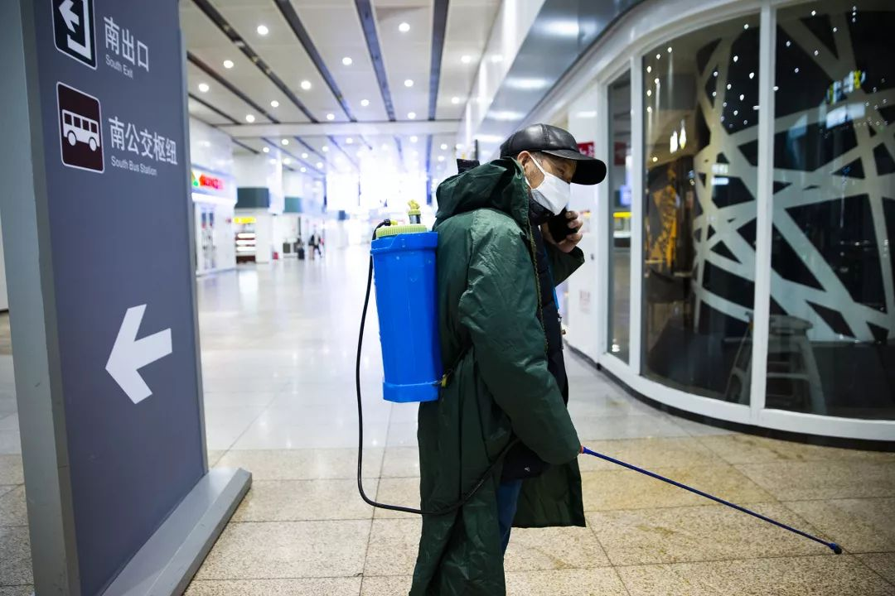
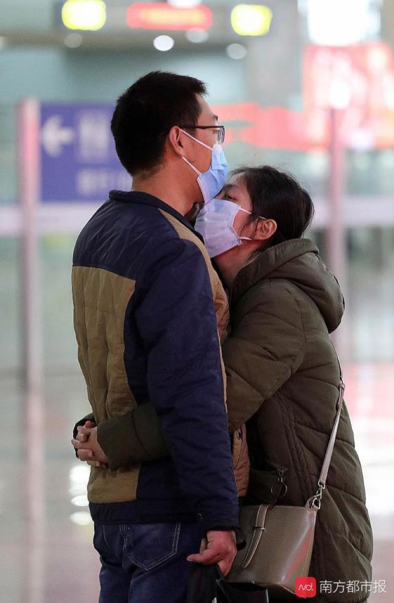
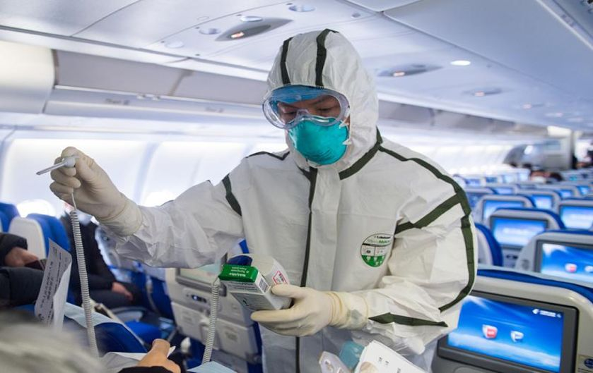
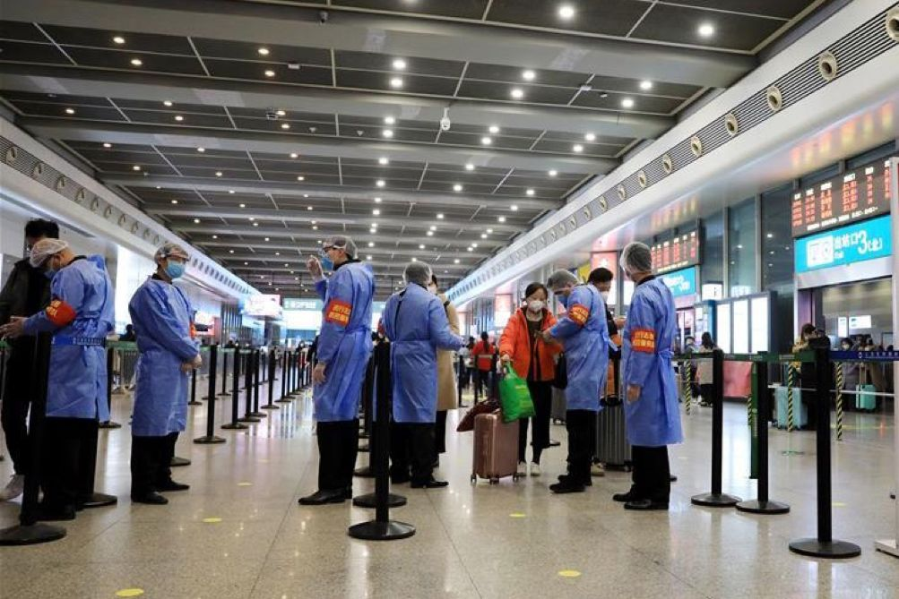
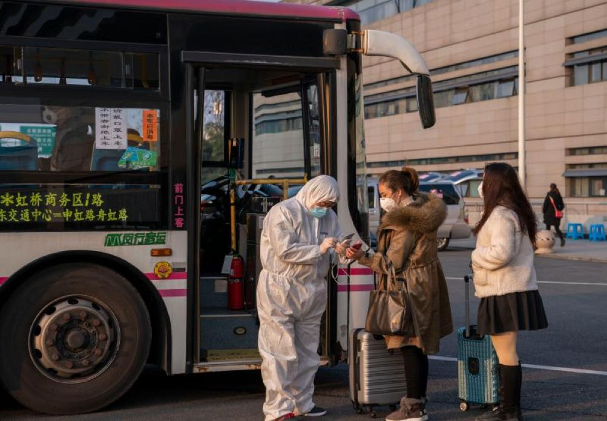
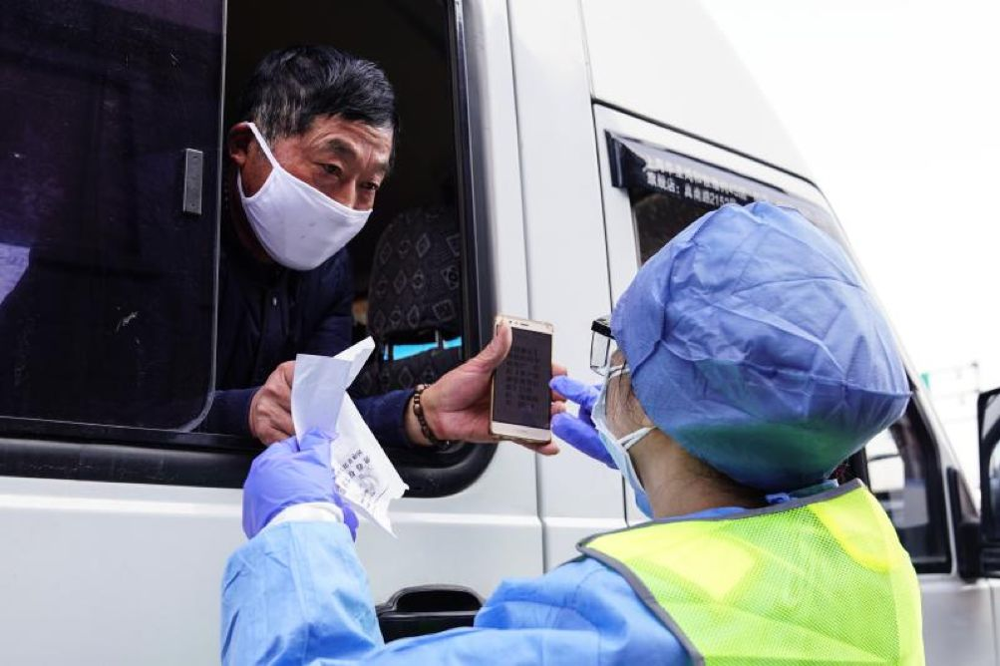
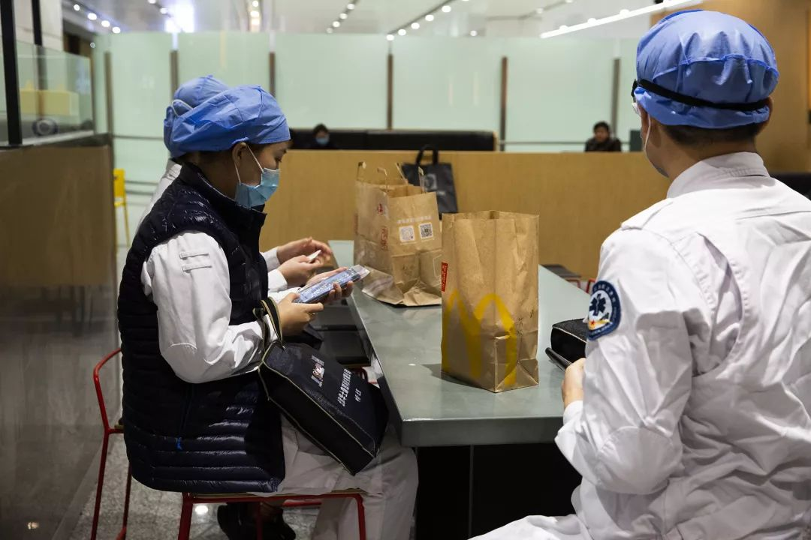

胆战心惊，我回到了北京
原文链接 备份链接 每年春运，对我这种十八线小县城在京打工者而言，返京都是一项大难题。从县城到省城到首都再到家，抢票、避高峰、算时间、挤地铁，每一段路程都足以令人精疲力尽。今年尤甚。 这是一年特殊的春运，我们不再因人流量巨大而恐慌，但病毒 …

图、文｜吕萌
编辑｜ 林鹏
随着延长假期的结束，疫情之下，“平安返程”成为每一位旅客心中的期盼。
在北京站，由大连始发的D31次动车缓缓驶进车站，每一位下车的旅客手中都拿着一份旅客信息登记表。表中填着每个乘车人的姓名、身份证号码、车次、住址等信息，在出站口由工作人员统一收回。
“列车上人不是很多，一路上还是挺紧张的，不敢说话，希望疫情能早点过去。”一位谢姓乘客说道。
据媒体报道，北京首都机场、大兴机场、北京站、北京西站和北京南站都增加了公共区域的消毒频次，配备红外线智能体温检测系统和手持测温仪，对进出港、进出站的旅客进行测温。体温异常的旅客需要到留观室观察、处置。
在上海虹桥火车站，到达的旅客需提前通过下载上海“健康云APP”、扫描列车座位上的二维码或关注“上海铁路局微信公众号”等方式，完成“来沪人员健康登记”。
“根据大数据的监测分析，从现在到春运结束，也就是到2月18日，预计还有1亿6千万人要陆续返程返岗。”交通运输部运输服务司司长徐亚华在国务院应对新型冠状病毒感染肺炎疫情联防联控机制新闻发布会上表示。
数据显示，截至2月10日，铁路部门累计在进出站环节排查发现发热旅客7573名；配合协查确诊或疑似病例车上密切接触者1800余批次。

2020年2月6日，北京站广场上的佩戴口罩返城的旅客。

2020年2月6日，北京站广场上拍照留念的乘客。

2020年2月6日，北京站站台内一些乘客选择戴上两层口罩进行防护。

2020年2月6日，北京站站台上陆续出站的乘客。

2020年2月6日，每一位乘客都需要填写旅客信息登记表。

北京站出站口处，每一个出站通道都设有红外测温设备，安检人员会检测每一位出站乘客的体温状况并将乘客填写的信息登记表统一收回。

北京站出站口一侧的观察室，如有乘客体温超过37.3℃时，车站工作人员会将其带到观察室进行进一步检测。

2020年2月7日，北京南站工作人员正在进行消毒工作。

2020年2月7日，北京南站，一位出站的乘客在电话中给家人报平安。

2月7日，工作人员在广州南站站台上进行消毒作业。为做好新型冠状病毒肺炎疫情防控工作，广州南站加强站内重点区域的消毒频次，全力保障旅客安全。(图片来源：新华网)

2月8日，广州南站到达旅客。（图片来源：中新网）

2月9日，广州南站，人们戴着口罩相拥。（图片来源：南方都市报）

随着疫情防控要求的不断升级，上海两大机场国际航班进出旅客严加检测，旅客无论出境还是入境均需填报《出入境人员健康申明卡》，既严防疫情输入，更严防疫情输出。(图片来源：上观新闻)

上海浦东机场集中了多数国际航班，上海海关卫生检疫工作人员频频登上航班进行登临检查。(图片来源：上观新闻)

2月9日，上海虹桥火车站对出发和到达的旅客进行测温，到达的旅客还需提前下载上海“健康云APP”、扫描列车座位上的二维码等方式，完成“来沪人员健康登记”。(图片来源：新华网)

上海虹桥火车站，登记信息显示为A类旅客，即从湖北出发或者途经湖北的旅客，则需进行登记，然后由接驳车统一转运至西广场，集中留验点再次核准后，告知其居家隔离14日，并通知其居住地所在社区落实相关工作措施。（图片来源：上观新闻）

2020年2月9日下午，入沪高速道口，每一辆进入检查点位的车辆驾乘人员都需填写“健康登记表”，交警和志愿者会对车内人员测量体温，核验证件及监控是否为重点地区来员，严守车辆入沪第一道防线。（图片来源：上观新闻）

2020年2月7日，首都机场T2航站楼，刚下飞机的乘客。

2020年2月7日，首都机场T2航站楼外，一位戴着一次性手套的乘客。

2020年2月7日，首都机场内，从泰国回来的旅客正在将从国外带回的口罩进行打包，并把余下的一些医用口罩免费赠给了机场内的保洁人员。

2020年2月6日，大兴机场的安保人员正在通过红外线进出设备检测每一位进出乘客的体温状况。

机场内的多数餐厅在假期中提前关店，机场工作人员选择机场内的快餐作为晚餐。

机场外的出租车等候处没有了往日排队上车的景象。

在机场外等客的出租车司机。客流量减少，他有时要等待5小时才能拉到一位乘客，这是以往没有的经历。
后台回复”读者群”, 加入更多讨论

小昼
微信扫一扫赞赏作者 赞赏
长按二维码向我转账
受苹果公司新规定影响，微信 iOS 版的赞赏功能被关闭，可通过二维码转账支持公众号。
原文链接 备份链接 每年春运，对我这种十八线小县城在京打工者而言，返京都是一项大难题。从县城到省城到首都再到家，抢票、避高峰、算时间、挤地铁，每一段路程都足以令人精疲力尽。今年尤甚。 这是一年特殊的春运，我们不再因人流量巨大而恐慌，但病毒 …
原文链接 备份链接 图片来源：图虫 记者：刘世龙 “ 据界面新闻检索公开报道，疫情发生以来，已有多位医护人员倒在了疫情防控救援工作一线。 ” 2020年2月14日，国新办就疫情防控最新进展特别是关爱医务人员举措举行新闻发布会。国家卫生健康 …
原文链接 备份链接 Photo by Serhii Maksymiv on Unsplash 记者：郑萃颖 “ 在2020年第一季度，预计疫情对调整后税息折旧及摊销前收益的影响在1000万美元至2000万美元。 ” 希尔顿集团近日发布 …
原文链接 备份链接 “你知道我们武汉人的恐慌是什么吗？ 一是，我们不知道自己有没有被传染。 二是，真被传染了，不知道能不能住上院。 三是，真能住上院了，不知道结果会怎么样。 说白了，就是永远不知道等待我们的明天，究竟是什么。” 小宗出生 …
原文链接 备份链接 被多个国家拒绝停靠之后，在海上流浪数日的“威士特丹号”终于在柬埔寨上岸 文 |《财经》特派记者 金焱 发自华盛顿 编辑 | 余乐 在海上近乎漫无目的地航行数日后，荷美邮轮公司的“威士特丹号”(MS Westerdam …